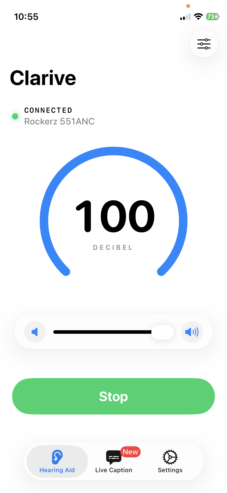
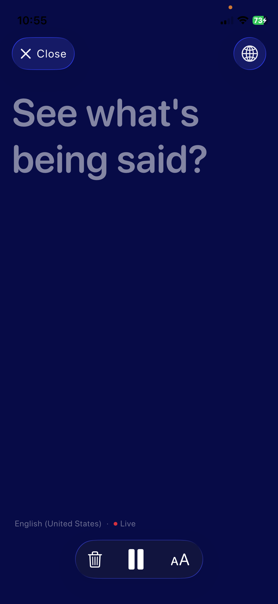
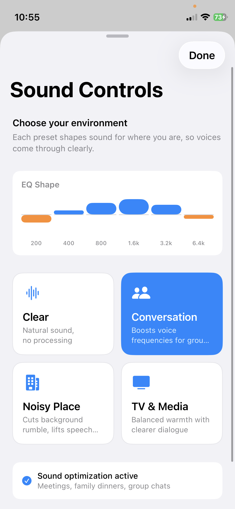

Game changer for noisy restaurants
"I'm 67 and restaurants have been a nightmare for years. With Clarive and my AirPods I can actually follow the conversation now. The Conversation preset is incredible. Wish I'd found this sooner."
Listening Device: Clarive
Amplify voices, filter noise, and read live captions — no internet, no account needed.
Download on the App StoreFree · iOS 17+ · Works with any headphones

3 Simple Steps
Plug in any wired or Bluetooth headphones. Clarive detects them automatically.
Your iPhone mic captures sound and plays it back through your headphones in real time.
Every word transcribed live on screen — so you never miss what's being said.
Features
Your iPhone already has everything required. Clarive just unlocks it.
Instant audio passthrough with zero noticeable lag. Boost volume far beyond your phone's normal limit. Works with any wired or Bluetooth headphones you already own.
On-device speech-to-text shows every word in real time. Supports 40+ languages with automatic detection. Adjustable font size — from regular to extra large.
Environment presets tuned for Conversation, Noisy Place, TV, and more. Shapes sound for where you are.
Everything runs locally. Your audio never touches a server. No account required.
Live captions work in English, Spanish, Hindi, French, and dozens more — with automatic language detection.
AirPods, EarPods, Bluetooth speakers, wired earphones — if it connects to your iPhone, it works.

Live Captions
Whether you're in a meeting, at a restaurant, or watching TV — Clarive turns speech into text instantly. On-device, no Wi-Fi needed.
Sound Intelligence
Clarive shapes sound for where you are — not just how loud it is. Pick your environment and let the app do the rest.
Natural sound, no processing. Best for quiet rooms.
Boosts voice frequencies for group settings and meetings.
Cuts background rumble, lifts speech clarity in cafés and streets.
Balanced warmth with clearer dialogue for watching at home.

Privacy First
Everything in Clarive runs entirely on-device using Apple's speech recognition. No servers. No accounts. No uploads. Your conversations are yours alone.
App Store Reviews
"I'm 67 and restaurants have been a nightmare for years. With Clarive and my AirPods I can actually follow the conversation now. The Conversation preset is incredible. Wish I'd found this sooner."
"Got my mum to try this and she hasn't put it down. The live captions are shockingly accurate. She uses it during phone calls too, which I didn't even expect. The privacy aspect gives us both peace of mind."
"I tried two other apps before this and both had that annoying delay that makes it unusable. Clarive has essentially zero lag. Plugged in my AirPods Pro and it worked perfectly. The amplification is also way louder than I expected."
Free to download. No account. No setup. Just plug in your headphones.
Download on the App StoreFAQ
Everything you need to know about Clarive as a listening device.
A listening device is any tool that helps amplify or capture sound to make it easier to hear. Traditional listening devices include hearing aids and assistive listening systems. Clarive turns your iPhone into a digital listening device — using the built-in microphone and your headphones to amplify the world around you in real time, with no extra hardware needed.
Clarive is purpose-built for iPhone and requires no extra hardware — just plug in any headphones. It combines real-time amplification, live captions in 40+ languages, and 4 environment presets in one app, making it one of the most complete assistive listening solutions available on iOS. It works on any iPhone running iOS 17 or later.
Clarive uses your iPhone's microphone to capture ambient sound, then processes it through the app and plays it back through your headphones with amplification applied — in real time. Bluetooth headphones, AirPods, and wired EarPods all work. There is no external hardware to buy, and it works the moment you open the app.
An assistive listening device (ALD) is technology designed to help people with hearing difficulty hear more clearly. ALDs include hearing loops, FM systems, and phone-based apps like Clarive. Unlike traditional ALDs that require specialized hardware, Clarive works on any iPhone running iOS 17 or later — just connect your headphones and open the app.
Yes. Audio amplification works completely offline. Live captions use Apple's on-device speech recognition, which also works offline after the first language model download. No Wi-Fi or mobile data required once set up.
Clarive is an audio amplification and live caption app — it is not a listening device detector or RF/bug scanner. If you need surveillance detection tools, that is a separate category. Clarive focuses on helping you hear clearly and follow conversations.
Any headphones that connect to your iPhone work — AirPods, AirPods Pro, AirPods Max, wired EarPods, Bluetooth earphones, over-ear headphones, or in-ear monitors. You do not need to buy any special hardware. If it connects to your iPhone, Clarive will use it.